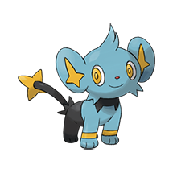
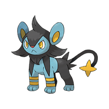
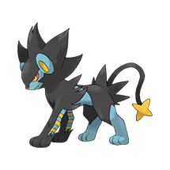
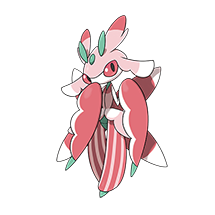
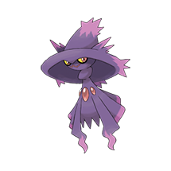
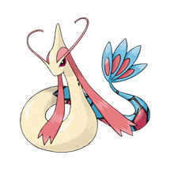

More About Me
Here it is, the full sebulant lore document. Watch me overshare to the best of my ability.
History of My Art
 Realistically you know me because of my art, so I'll talk about that. When I was a kid I was obsessed with art, every night before I went to bed I would fill a couple pages in my sketchbook with random doodles and comics.
Realistically you know me because of my art, so I'll talk about that. When I was a kid I was obsessed with art, every night before I went to bed I would fill a couple pages in my sketchbook with random doodles and comics.

My main inspiration growing up was Edd Gould (Eddsworld), I remember when my cousin first showed me Moving Targets on Newgrounds and thinking it was the funniest thing. I subscribed to his YouTube channel a few months later and watched all his cartoons on repeat.
Another 2 people who helped jumpstart my interest in art are my older sister and a friend of mine. They don't actually know this, but at some point they drew something and showed it to me when I was around 5 or 6 years old. Whatever it was they showed me, I looked at it and thought "I could probably draw that too". So I copied them exactly, then over time developing my own style.Then I pretty much stopped drawing altogether in 2013. I could pin the blame on my art teacher telling me to not draw in a cartoon style, but realistically it's just cause I got bored of it. I was way more interested in Minecraft for my own good at the time.

In 2021, I was given an Amazon gift card voucher, and on a whim I bought a tablet (Wired Wacom Intuos S). I had seen Bacun shilling Newgrounds on Twitter and thought I'd give it a look. That motivated me enough to start posting my art online for the first time.Nowadays there are 2 different people who keep my drive to keep drawing, RubberRoss and my friend Will. You've probably heard of Ross before, he makes art fun, always encouraging artists to keep going and share their work. Also just a cool guy outside of the art and Gartic stuff.

As for Will. Back in primary school, Will liked seeing my cartoons and wanted to do them too, so I taught him. I brought him up to my level (not that high lol) and we drew together. After primary school though, I stopped drawing and he kept going. We started going to school together again 5 years later and the progress he made was insane. Someone who was once at my level improved that much. That could've been me if I didn't stop, so I decided to pick up the pen again. FavouritesTop 10 sebulant interests number 3 will shock you!!!!!1! These lists are in no particular order and probably miss a few things that I couldn't remember when I was writing them.
- Games:
- Psychonauts
- Minecraft
- Pokemon (Legends Arceus to be more specific)
- Fortnite lol
- Ultrakill
- SSX 3
- Artists:
- Worthikids. No one man should have THAT much talent.
- Vanripper (Helltaker creator). Very fond of their art style.
- Pitch Canker. Very distinctive art, always really good.
- ap1os. Very talented artist and draws Vaporeon like a normal person.
- WuWanan / HorseFeathers. Been following since ~2015. Both his music and art are all such high quality.
- MachiToons. Also just really like their art style.
- Music Artists:
- Carpenter Brut (GOAT)
- Justice
- The Prodigy
- Machine Girl
- Reznyck
- DM DOKURO
- Songs:
- Carpenter Brut - Le Perv
- Carpenter Brut - Color Me Blood
- goreshit - the end
- The Prodigy - Omen
- Carpenter Brut - Hang'em All
- Actually pretty much any Carpenter Brut song really lol
- Pokemon: (yes we're on this level of autism)
- Vaporeon

- Shinx/Luxio/Luxray (the whole line is peak)



- Lurantis

- Alolan Ninetales

- Mismagius

- Milotic

Also special shout out to Bronzor the WORST pokemon. I will melt them all down and sell them for scrap.
Cool sebulant FactsI used to make YouTube videos, but unfortunately I had to take them down. I would've kept them up, but I cannot risk letting my 16 year old selfs overly edgy sense of humour be the reason I lose my job. Some were classics though, throwback to "THE PROS OF METH", "TOP 10 WORST ANIMALS (FUCK YOU)" and "BIIROAAM THE MOVIE".
I was credited as one of the founding fathers for this meme (below is not my video):
I learned how to program based off a tutorial for a Minecraft mod. Now I have a degree in games programming. Crazy how one youtube tutorial chose my entire career path.
Unfortunately I am in possession of a "valuable" Minecraft account. It's a 3 letter name (Beb) and has a Minecon cape. The people who trade these accounts somehow got my personal email (with my real name) and won't stop harassing me. How fun! Based off the few sellers I decided to talk to, the account is probably worth $400-$500. If you would like to inquire about purchasing it, fuck off.
My art has gotten into an official art book before. If you have a copy of the "20 Double Fine Years" art book, check for the Raz pixel art at the end with all the fan art. It's credited under my real name though, not sebulant.
Ok that's enough talking about myself on the internet. Anymore and I'll get myself doxxed.